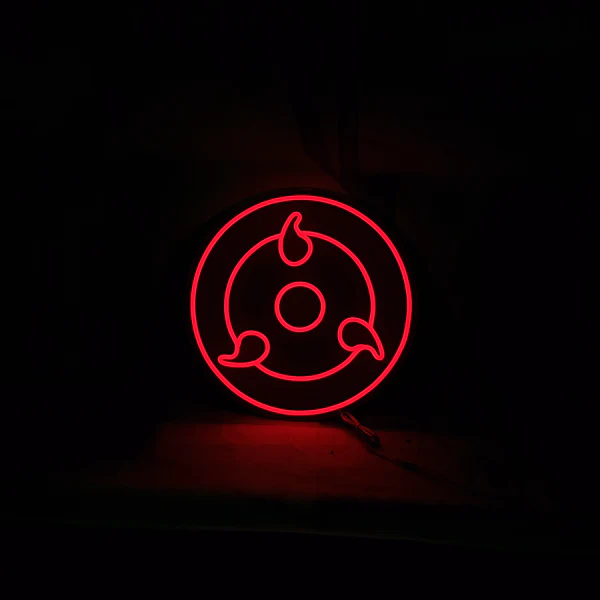

Acquisition
When a wielder of this kekkei genkai
experiences a powerful emotional
condition with regards to a person
precious to them, their brain releases
a special form of chakra that affects
the optic nerves, transforming the eyes
into Sharingan; for that reason the
Sharingan is described as an "eye that
reflects the heart" (心を写す瞳, Kokoro
o utsusu hitomi). Often, as per
the Uchiha's so-called "Curse of Hatred",
this emotion is a negative one, brought
on by stress or loss. The emotion
can also be positive, driven by a desire
to protect or reunite with a loved one.
In the anime, it was shown that usually
after first acquiring this power, the
user's enhanced perception will throw
off their timing, causing them to overstress
their bodies from trying to keep up with
the increased reaction time, forcing the
user to adjust to properly move with it.
A higher control of one's chakra is also
required to maintain its power for long.
It was also shown during emotional states
that begin to trigger the Sharingan's
awakening, it can temporarily blur the
person's eyesight until finally manifesting.
Assuming that the user is aware they
have awakened the Sharingan, they are
thereafter able to freely use it. When
first awakened, each Sharingan usually will
have only one tomoe (巴), although in some
case, they immediately gained two tomoe in
each of their eyes. Through emotional growth
of extreme conditions, the Sharingan will
continue to develop, its full maturation
represented by a third tomoe. When Hagoromo
awakened the Sharingan in the anime, he
had all three tomoe immediately. All the
Sharingan's abilities are available to the
user from its earliest stage, but with
greater development comes greater proficiency
with those abilities. Example, with full maturation,
the Sharingan's ability to perceive all targets and
events around them is fully developed, which can
cause the user's movements to drastically differ
from their earlier movements if their Sharingan
matured mid-battle.
